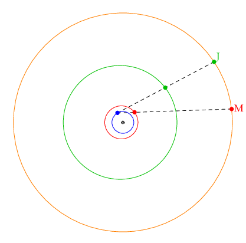

Retrograde motion

The orbits of Earth, Mars, and Jupiter around the sun. Viewed from Earth against the backdrop of the fixed stars, retrograde motion is observed when Earth overtakes Mars/Jupiter.
Retrograde motion is easily explained by a heliocentric model, but much more difficult to justify with Earth is placed at the center.